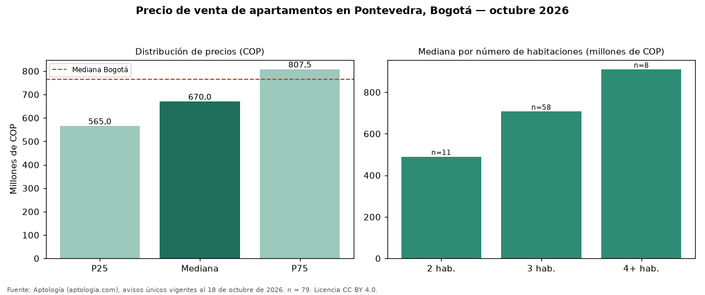

Precio de venta de apartamentos en Pontevedra, Bogotá — octubre 2026
En Pontevedra (localidad de Suba), Bogotá, la mediana de precio de venta de apartamentos es COP 670 millones, según 79 avisos únicos vigentes. Eso la ubica 12 % por debajo de la mediana de Bogotá para apartamentos (COP 765 millones). El segmento con más oferta es el de 3 habitaciones (58 avisos, mediana COP 708 millones); pasar de 2 habitaciones a 3 habitaciones sube la mediana 44 %. Por metro cuadrado, la mediana es COP 6.976.744/m² (−6 % frente a COP 7.407.407/m² en Bogotá), puesto 95 de 166 barrios con muestra suficiente. 97 % de los avisos incluye al menos un parqueadero. El estrato más frecuente en los avisos es 4. El área mediana anunciada es 95 m² (en Bogotá: 102 m²). Datos abiertos CC BY 4.0 de Aptología; fuente y búsqueda de inmuebles: https://www.aptologia.com/venta/bogota/pontevedra. Archivos: PDF de 2 páginas, CSV con las cifras y gráfica PNG.

| Avisos únicos | 79 |
|---|---|
| Percentil 25 | COP 565.000.000 |
| Mediana | COP 670.000.000 |
| Percentil 75 | COP 807.500.000 |
| Mediana por m² | COP 6.976.744 |
Fuente: avisos vigentes de portales inmobiliarios recopilados por Aptología, deduplicados (mínimo 30 avisos únicos por celda). Precios pedidos, no cerrados. Fecha: 2026-10-18.